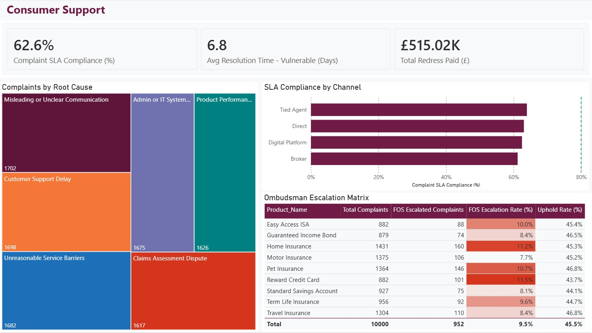

Regulatory Analytics • Financial Conduct Authority
Conduct Risk & Customer Outcome Monitoring
Monitoring and governance reporting suite engineered to satisfy UK Financial Conduct Authority (FCA) Consumer Duty requirements (PS22/9). Audits 50,000 policy sales and 10,000 complaints against published FCA Value Measures benchmarks, tracking fair value claims ratios, operational support SLAs, and vulnerable customer disparities.
- Developed multi-dimensional vulnerability matrices categorizing customer risk triggers into clear governance compliance tiers.
- Implemented fair value margin diagnostics flagging products with disproportionately low claims payout ratios relative to industry averages.
- Engineered 4-page interactive Power BI reporting suite with Star Schema SQLite backend and automated test verification.

